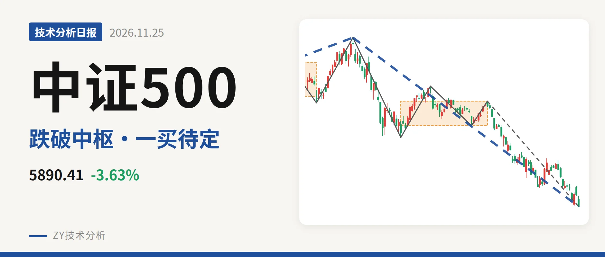
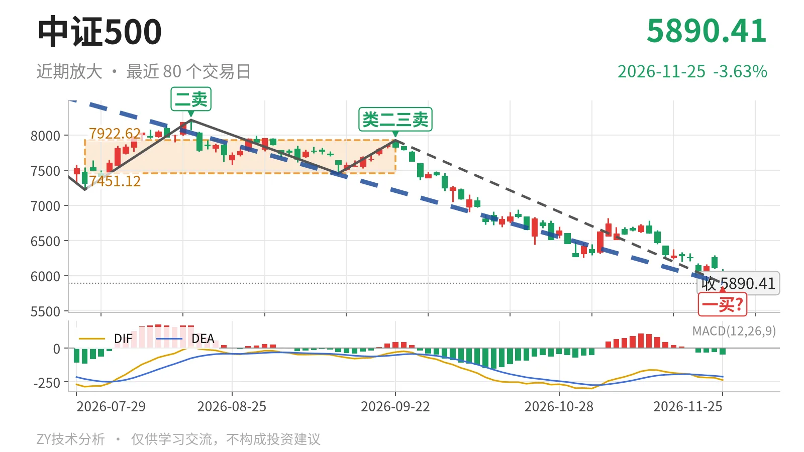

中证500｜跌破7451点中枢，暂定一买未成型

最近日线中枢 7451.12—7922.62点，收盘位于中枢之下
一句话：7月1日以来下跌段未结束，5890.41点仅为暂定一买。
📉 走势结构：下跌线段未结束，回撤加深
当前仍处在7月1日以来的日线下跌线段里，9月22日至11月25日的下跌笔也还在延续，因此日线级别下跌没有走完。这轮下跌从9147.56点开始，到11月25日收在5890.41点，下跌约35.6%，已经回吐2025年11月24日6797.50点至2026年7月1日9147.56点上涨段的全部空间。从更大级别看，7月1日以来的下跌段同样没有结束，目前不是中枢震荡，而是对2024年2月5日4281.24点以来上涨的深幅回撤。

📍 中枢与位置：跌破最近日线笔中枢，中枢下移
最新价5890.41点落在最近日线笔中枢（7月30日至9月22日，7451.12—7922.62点）的下方，低于下沿约20.9%。这个中枢中轴在7686.87点，比更早的1月26日至6月8日中枢（8014.66—8671.35点）明显下移，说明反弹高点一个比一个低。当前价格已回到2024年10月8日至2025年4月9日的中枢（5843.46—6079.02点）内，靠近下沿；线段级中枢（2022年4月27日至2023年8月4日，5594.30—6263.16点）仍未破坏，最新价还在其中。
🧭 买卖点：5890.41点只是暂定一买
日线笔级别卖点自7月1日一卖9147.56点之后，8月18日二卖8211.31点、9月22日类二三卖7922.62点一个比一个低，下跌段中的反弹未被扭转。11月25日出现的暂定的一买5890.41点，只是因为9月22日以来的下跌笔没有结束，会随这一笔的延续而变化。线段级别里，2025年11月24日三买6797.50点之后价格虽冲至2026年7月1日9147.56点，但当前已跌回该三买点下方，这个三买只对应随后上涨段中的较小级别，不再具有线段级别结构意义。

⚖️ 背驰：绿柱面积缩小，DIF低点却更低
当前下跌笔尚未出现可靠背驰。最值得比较的是7月1日至7月30日下跌笔与9月22日至11月25日下跌笔：前一段跌幅约21.1%，绿柱面积2687，DIF低点-285.2；后一段到11月25日跌幅约25.7%，绿柱面积1978，DIF低点-298.6。后一段价格创出新低，但DIF低点同步创出新低，绿柱面积也没有超过前段，这不是标准的新低不新弱，反而说明下跌仍未出现可靠衰竭。最新DIF从-298.6回升至-236.3，仍低于DEA的-211.4，日线动能还未转正。
🔎 关键位置观察：7451点是反抽试金石
当前结构压力先看最近日线笔中枢下沿7451点附近。若后续反抽不能回到7451点上方，结构上具备形成三卖的条件，对应7月30日至9月22日中枢的离开。重新站上7923点一线，才意味着价格拉回该中枢，下跌更可能转为中枢扩展而非单边离开。下方结构承接可看5843点附近和5594点附近，分别对应2024年10月8日至2025年4月9日日线笔中枢下沿与2022年4月27日至2023年8月4日线段级中枢下沿。整体判断为偏弱：价格已低于最近日线中枢下沿20.9%，且9月22日以来的下跌笔未现衰竭。
⚠️ 本文为基于公开行情数据的缠论技术结构记录，由程序自动计算并生成，仅供学习交流，不构成任何投资建议。市场有风险，投资需谨慎。